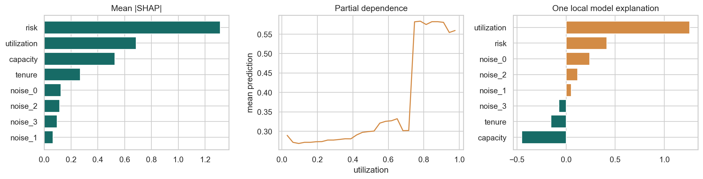

ML Hands-on Lab · 10 — Practice and diagnosis
SHAP and partial dependence
1. The decision and the mechanism
An explanation describes how a fitted model produced a score. SHAP assigns additive credit to inputs; partial dependence asks how predictions change under an artificial feature intervention. Neither automatically tells you what would happen if you changed the real world.
This lesson includes the mechanism, a hand-worked example, and the experiment design. The paired notebook contains the complete runnable setup and produces the diagnostic figure below.
2. Work a small example
The notebook generates a known nonlinear outcome: risk raises the logit, capacity lowers it, high utilization adds a jump, and risk interacts with utilization. A tree ensemble can learn these shapes. Knowing the generating rule lets you compare an explanation with a controlled truth while remembering that the explanation still refers to the fitted model.
Add contributions on the right scale
Suppose a binary tree model has baseline log-odds −1 and SHAP contributions +0.8, +0.3, and −0.2. They sum to −0.1. Applying the sigmoid gives probability 1 / (1 + exp(0.1)) ≈ 0.475. Adding the contributions directly to the baseline probability sigmoid(−1) ≈ 0.269 would be wrong: these contributions are in log-odds, not probability points.
3. The mathematics, with meanings
\[f(x)=E[f(X)]+\sum_j\phi_j\]
The baseline is a reference model output. A positive contribution raises the output relative to that reference; a negative contribution lowers it. The explanation depends on what “feature absent” means and which background distribution is used. Correlated inputs make that convention consequential.
\[\mathrm{PDP}_j(v)=n^{-1}\sum_{i=1}^{n}\hat p(x_{i,-j},x_j=v)\]
For a partial-dependence point at utilization v, replace utilization with v in every evaluation row, predict each modified row, and average. The result is a model response curve. If real utilization and risk are correlated, this substitution can create combinations never observed in reality. It is not a randomized treatment effect.
4. Follow the actual experiment
- Generate 2,200 rows with four meaningful inputs and four independent noise columns. Sample the binary label from the known probability rather than assigning a deterministic label.
- Make a stratified train/test split and fit an XGBoost classifier using training rows only. Read held-out AUC before interpreting a model that may have learned poorly.
- Use TreeExplainer to obtain one SHAP contribution per test row and feature. Inspect one case locally, and average absolute contributions for a global ranking.
- Sweep utilization across 30 values. In each copy of the test data, overwrite only utilization and average predicted probabilities.
- Add a near-duplicate of the risk feature, refit, and observe whether attribution is divided between proxies even if predictions remain similar.
5. Controls worth changing
| Control | What changing it does | What to inspect |
|---|---|---|
| Reference/background convention | Changes what absent features are compared with. | Check the explainer’s documented output scale and dependence assumptions. |
| Tree depth: 3 | Larger depth can represent more interactions but can fit noisy detail. | First verify held-out predictive quality; elaborate explanations cannot rescue an unreliable model. |
| PDP grid: central 2%–98% | Restricts the sweep to a less extreme range. | Even values within marginal ranges can form unrealistic feature combinations. |
| Near-duplicate noise: SD 0.01 | Makes two risk measurements almost interchangeable. | Compare summed credit of the pair as well as each individual ranking. |
6. Read the result and its limits
Read the three panels as different questions. Mean absolute SHAP indicates how much a feature moves model scores across cases; it hides direction. The partial-dependence curve shows average model response to a controlled substitution; it can hide heterogeneous individual responses. The local bar chart explains one case, so its ranking can differ from the global one. Random-ranking AUC is 0.5; explanation quality is not a substitute for beating that baseline.

In the duplicate-feature exercise, inspect both attribution and predictive scores. Split credit does not establish that one measured risk variable is unimportant. Conversely, a large contribution does not establish causation or rule out a leaked feature. Check when the input becomes available in the real decision process.
7. Code that exposes the mechanism
The following is the actual computation underlying the two explanation views. model is the fitted XGBoost model; X_test is the held-out feature frame.
explainer = shap.TreeExplainer(model)
contributions = np.asarray(explainer.shap_values(X_test))
# Global magnitude: direction is intentionally discarded.
importance = pd.Series(
np.abs(contributions).mean(axis=0), index=X_test.columns
).sort_values()
# Partial dependence by explicit feature substitution.
grid = np.linspace(
X_test.utilization.quantile(.02),
X_test.utilization.quantile(.98), 30,
)
pdp = []
for value in grid:
changed = X_test.copy()
changed["utilization"] = value
pdp.append(model.predict_proba(changed)[:, 1].mean())For a local explanation, read contributions[row] with that row’s actual feature values. Check that the baseline plus contributions reconstructs the model output on the explainer’s scale before attaching a probability interpretation.
8. Break an assumption
Create risk_duplicate = risk + Normal(0, 0.01) and refit. A tree can route on either proxy, so credit can move or split. This failure matters when someone mistakes an attribution ranking for ownership of an effect.
- Compare risk’s original mean absolute contribution with the combined contributions of risk and its duplicate. Predictions can be stable while attribution ownership is not.
- Plot separate partial-dependence curves for low-risk and high-risk rows. The known interaction should make averaging less informative.
- Replace a noise feature with information recorded after the outcome. The model can explain its shortcut perfectly while the decision system is invalid.
9. When to use it and what comes next
Use these tools to debug a predictive model, investigate specific decisions, and form hypotheses about learned associations. For causal claims, use a causal design and assumptions that connect interventions to outcomes. For strongly correlated features, consider grouped explanations and inspect individual response curves rather than presenting one global ranking as the whole story.